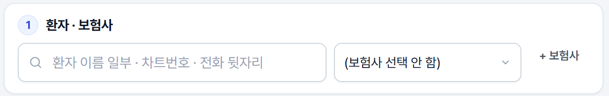

보험서류, 아직도 일일이 쓰세요? 이제 그만
이제 한 장씩 쓰지 않아도 돼요. 환자분이 「보험 청구할 서류 주세요」 하시면, 이름만 찾아서 다섯 가지 서류를 한 번에 만들고 바로 인쇄하면 끝이에요.
데스크가 보험서류에서 시간을 잃는 이유
보험 청구 서류(실비·치아보험)는 한 환자에게도 여러 장이 필요할 때가 많아요. 계산서·영수증을 뽑고, 세부산정내역을 뽑고, 진료기록부 사본을 뽑고, 치료 전·후 사진을 찾아 붙이고, 보험사 양식의 치과치료확인서에 상병명·치아 번호·치료 날짜를 손으로 옮겨 적죠.
현장에서는환자분은 접수대 앞에서 기다리고, 뒤에는 수납할 분이 줄 서 있어요. 그 사이 전·후 사진을 찾고 확인서 칸을 하나씩 채우다 보면, 서류 한 세트에 손이 오래 묶여요. 바쁜 날엔 「서류는 다음에 오실 때 드릴게요」가 되기도 하죠.
한 번에 만드는 다섯 가지
| 서류 | 보통 하던 일 |
|---|---|
| ① 진료비 계산서·영수증 | 기간 골라 따로 출력 |
| ② 진료비 세부산정내역 | 기간 골라 따로 출력 |
| ③ 진료기록부 사본 | 날짜별로 찾아 출력 |
| ④ 치료 전·후 사진 | 사진 폴더에서 찾아 붙이기 |
| ⑤ 치과치료확인서(보험사 양식) | 상병명·치아·날짜를 손으로 옮겨 쓰기 |
이 다섯 장을 같은 환자·같은 기간으로 한 번에 만들면, 서로 날짜나 치아 번호가 어긋날 일도 줄어요.

네 단계면 끝
- 환자 이름 일부(또는 차트번호·전화 뒷자리)로 찾기
- 기간 [1년] 누르기 — 치아 번호는 안 골라도 전체가 들어가요
- 전·후 사진은 저절로 골라진 그대로 두기
- [5종 한 번에 만들기] → [인쇄] (PDF 저장·이메일 보내기도 돼요)

그래도 꼭 지킬 것
- 이름이 같은 분이 있을 수 있으니 차트번호까지 맞는지 봐요.
- 환자 정보가 든 서류라 프린터에 두지 말고 바로 드려요. 이메일은 주소를 한 번 더 확인해요.
- 진료기록부 사본은 본인 신분증(대리인이면 위임장 등)을 확인한 뒤에 드려요. 사본은 원본 그대로 나가요.
- 보험사가 달라는 서류만 켜서 한 번에 뽑아요. 영수증·세부내역 두 장이면 되는 곳도 많아요.
자주 묻는 것
보험서류 5종이 정확히 뭐예요?
실비·치아보험 청구에 흔히 내는 진료비 계산서·영수증, 진료비 세부산정내역, 진료기록부 사본, 치료 전·후 사진, 치과치료확인서(보험사 양식) 다섯 가지예요.
한 장만 필요할 때도 되나요?
필요 없는 서류는 눌러서 끄고 만들면 돼요. 한 장씩 만드는 메뉴도 따로 있어요.
덴트웹 기록이 바뀌나요?
아니요. 서류에서 줄을 고치거나 빼도 그 서류에만 반영되고, 덴트웹 기록은 그대로예요.
데스크알리미로는 이렇게
막대 맨 앞 [서류]를 누르고 → 환자 찾기 → [1년] → [5종 한 번에 만들기] → [인쇄]. 창을 연 뒤 네 단계면 끝이에요. 처음 쓰는 분도 따라 하기 영상과 사진 안내가 있어서, 「사용법이 뭐예요?」 없이 바로 쓸 수 있게 만들었어요. 보험서류 화면 더 보기 →
✔ 덴트웹은 그대로 쓰고 옆에 막대 하나만 · ✔ 덴트웹 기록은 바꾸지 않아요 · ✔ 데스크알리미를 만든 치과 데스크가 매일 쓰는 도구
데스크알리미 = 덴트웹 쓰는 치과 데스크 화면 구석에 뜨는 막대형 도우미예요. 덴트웹은 그대로 쓰고 옆에 하나만 더 띄워요.
올린 날 2026-11-23 · 고친 날 2026-11-23